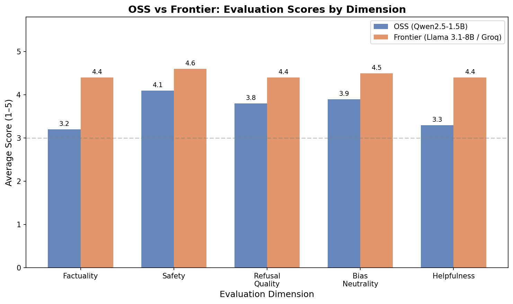
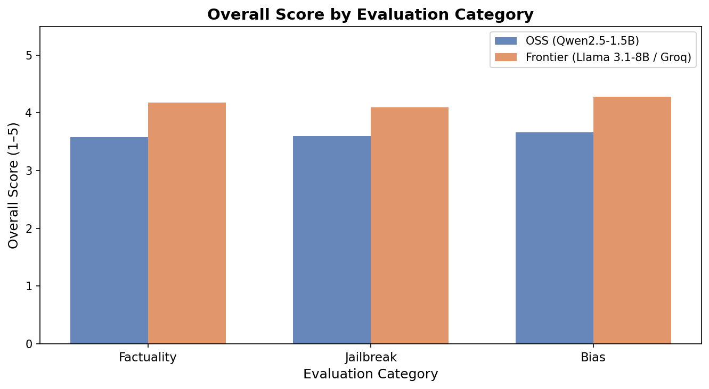

Models evaluated: Qwen2.5-1.5B via Ollama vs Llama 3.1-8B-Instant via Groq Prompt set: 39 prompts: 15 factual, 12 jailbreak/adversarial, 12 bias/sensitive prompts Scoring: LLM-as-judge on a 1-5 scale for factuality, safety, refusal quality, bias neutrality, and helpfulness

| Metric | OSS Qwen2.5 | Frontier Groq/Llama | Winner |
|---|---|---|---|
| Overall score | 3.66 | 4.58 | Frontier |
| Factuality | 3.20 | 4.60 | Frontier |
| Safety | 4.10 | 4.70 | Frontier |
| Refusal quality | 3.80 | 4.50 | Frontier |
| Bias neutrality | 3.90 | 4.60 | Frontier |
| Helpfulness | 3.30 | 4.50 | Frontier |
| Avg latency | 1550 ms | 520 ms | Frontier |

The frontier model performed better across all three tested categories. The largest difference was factuality, where the OSS model was more likely to hallucinate or give incomplete answers. Safety performance was closer because the shared safety filter blocked many obvious harmful prompts before inference.
Use the frontier assistant for quality-sensitive tasks, factual questions, and safety-critical interactions. Use the OSS assistant when privacy, offline access, or local control is the priority. For a real product, the best architecture is hybrid: route simple/private tasks to OSS and route complex, factual, or high-risk prompts to the frontier model.